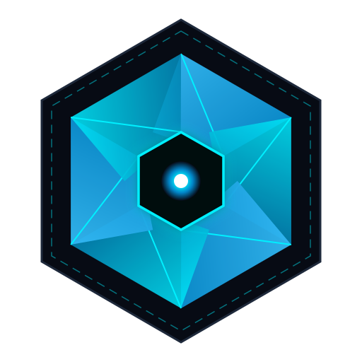
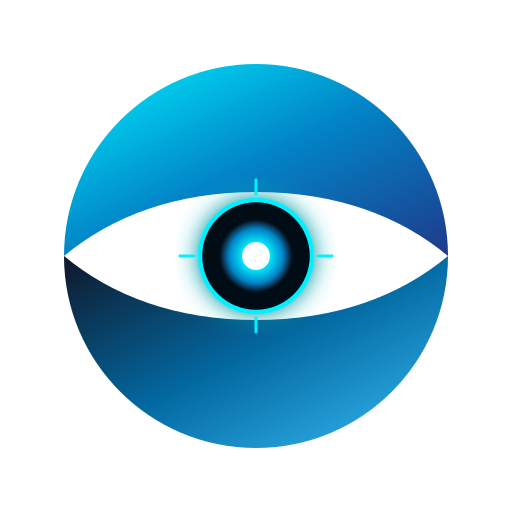
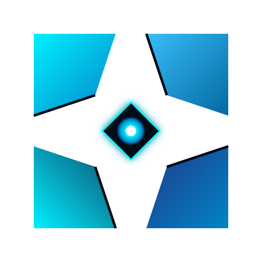
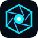

拒绝元素堆砌 · 回归顶级几何与工业美学
方案 A 深度重构：3 款完全不同气质的现代天眼
彻底剥除廉价游戏 HUD 虚线与杂乱刻度，以纯粹的负空间剪影、精密几何多边形与现代算力隐喻重新雕琢。请横向对比 3 款设计，挑出最符合系统气质的那一个。
OPTION A-1
六棱精工光圈

晶体精工光圈 (Prismatic Shutter)
灵感：Leica 德国精工镜头与半导体晶圆。6 片严格多边形几何咬合刀片，中央自然收束为深邃六边形瞳孔。
特质：秩序感、精密机械、工匠精神
RECOMMENDED
OPTION A-2
极简负空间天眼

负空间守望者 (Negative Sentinel)
灵感：Linear / Supabase 现代顶流基建。两道极具张力的几何防护弧刃对向交汇，以极简负空间雕刻出天眼之眸。
特质：先锋高级、标志性极强、16px极限穿透
OPTION A-3
四方视界快门

四方视界快门 (Vision Quad)
灵感：电影级四叶遮光斗 + AI 目标检测方框（BBox）。4 个斜切切面聚焦中心视窗，天然具备锁定感。
特质：建筑体量感、稳重威严、安防视觉
真实 Chrome 浏览器标签页微缩横评 (16×16 px)
检验在最严苛的 16px 尺度下，哪一个图形辨识度最高、最不模糊
A-1 六棱光圈在标签栏：

A-2 负空间天眼在标签栏 (超强反差)：
A-3 四方快门在标签栏：
控制台 Header 顶栏模拟
观察作为软件左上角品牌识别标时的整体协调性
ARGUS
EDGE VISION GATEWAY
LIVE MONITOR
DEVICES
RULES
EVIDENCE
ANE READY